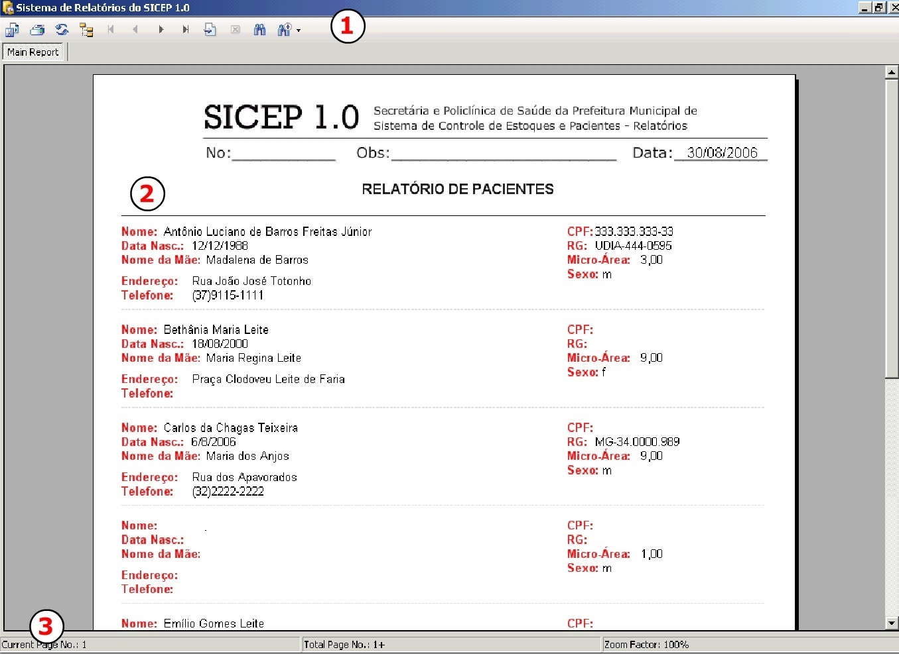

|
|
||||
|
OS RELATÓRIOS O SICEP 1.0 traz diversos relatórios sobre as informações
armazenadas no sistema. Para acessar todos basta clicar sobre o Menu RELATÓRIOS
e acessar o desejado. Em várias telas existem links diretos para os relatórios,
clique sobre eles e visualize pesquisas, relações e informações de forma pronta
para impressão. Veja abaixo como acessa-los:
:: RELATÓRIOS DA SECRETARIA
::RELATÓRIOS DA POLICLÍNICA
::RELATÓRIOS DE CADASTROS
AS FUNÇÕES DA TELA DE RELAÓRIOS  A tela de relatórios exibe em colunas e linhas
prontos para impressão em folha A4 o resultado de sua pesquisa de dados inseridos
no programa. Mas você pode fazer muitas outras coisas além de simplesmente imprimir
a pesquisa. Na parte superior do
sistema de relatório é apresentada uma barra com opções. Nestas você pode estar aproximando ou distanciando a imagem do relatório,
ver página á página numa visualização tipo Microsoft Word, exportar esse relatório
em vários formatos sem perda de formatação como *.xls para Microsoft EXCEL, *.pdf
para PDF-Acrobat Reader, *.doc para Microsoft Word e muitos outros. Pode também atualizar e logicamente imprimir seu relatório. |
||||
|
|